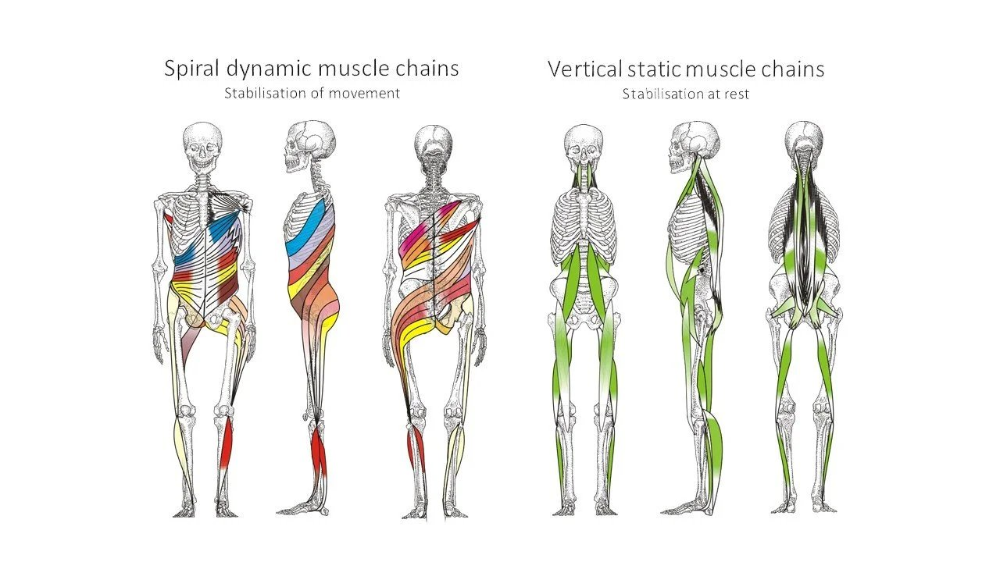

Hi, my name is Keriann, a Human Biomechanics Consultant and Trainer. I want to share my personal and clinical experience with fascial blasting and stretching.
I know it seems so relieving. If your fascia is tight and knotty, why not just blast it or stretch it out?
The truth is, I work at a clinic where many people come in with lasting fascial pain. These people have tried stretching and massage guns and blasting and guess what? They’re still in pain!
Here is why I stopped fascia blasting.

Your QUICK Introduction to Fascia and Common Treatments Such As Fascia Blasting & Stretching
Fascia is a type of tissue that surrounds muscles, bones, and organs. It is important for the body's movement and function. This complex network not only provides structural support but also contributes to our mobility and posture.
Its health is crucial for pain-free movement and overall well-being. As awareness of fascia's significance has grown, so too have the methods aimed at addressing its dysfunctions. Among these, fascia blasting and fascia stretching have emerged as popular treatments.
Promoted for their potential to alleviate pain, improve flexibility, and enhance physical appearance, these methods have garnered widespread attention. However, the journey towards understanding the true impact of these treatments reveals a more nuanced reality.
Fascia blasting uses a tool to apply pressure and break up fascial adhesions. Popular tools include the Ashley Black fascia blaster or a massage gun. It aims to reduce cellulite, ease pain, and increase flexibility. Similarly, fascia stretching focuses on elongating the fascia, aiming to release tightness and improve the range of motion.
Some claim that Fascia blasting works by increasing blood flow, reducing subcutaneous fat and supporting your layers of fascia. Various fascia blaster reviews spread positive news of this treatment. We are going to address the longterm side effects of treating fascia and fibrous tissue via blasting and stretching.

Fascial blasting and fascia stretching may seem helpful initially. However, upon further investigation, they may not offer long-term relief. They also may not provide permanent solutions.
This article talks about the problems with fascia blasting and stretching from a human movement perspective. It recommends a more holistic approach to improving fascial health and addressing issues.
The Appeal of Fascia Blasting and My Initial Experience
I started fascia blasting to help with pain, movement issues, and cellulite. I was using a fascial blasting massage gun about 3 times a week.
The fast results and easy process of fascia blasting with a massage gun at the gym intrigued me. I started using it 6 years ago, hoping for a major shift in my body and chronic pain levels.
The initial attraction was strong because of positive reviews and the chance to improve fascial health through physical methods.
Moreover, the ability to save money by not going to a massage therapist weekly.
My initial experiences with fascia blasting and stretching was immediate, albeit temporary, enhancements. The process improved how I felt and made it easier for me to move through ranges of motion. I was already too flexible and I didn't realise it was a problem at the time.
These perceived benefits reinforced the routine, making fascia blasting and stretching a regular part of my gym regimen. I was using a massage gun over my full body and a foam roller for rolling out my larger muscle groups.
These methods are attractive because they promise benefits and specifically target fascial adhesions. Many believe that fascial adhesions cause discomfort and mobility issues. The first issue we run into is that fascial adhesions occur because of dehydration and lack of stability.
Using a fascia blaster can help solve problems with tightness and chronic pain quickly. Stretching exercises for the fascia can also lead to short term relief.
My early positive experiences made me more committed to the practices. This led to a deeper look at how they affect long-term fascial health. I was about to discover why surface level approaches to deeper issues are not the answer.
Understanding the Functional Patterns Approach
The Functional Patterns (FP) methodology represents a paradigm shift in approaching human health. FP focuses on the body's holistic movement patterns rather than isolated interventions.
At its core, FP emphasises the importance of training the body in a manner that mirrors real-life movement patterns. It aims to correct imbalances and issues that contribute to pain, restricted mobility, and postural issues.
This approach is different to more traditional methods, such as fascia blasting and stretching. Most modern techniques target symptoms without addressing the underlying causes of dysfunction (the system).
FP methodology understands that the body operates as an integrated system. Each component influences and is influenced by others.
Fascial blasting and stretching isolates the fascia as a singular source of discomfort or limited mobility. FP seeks to identify and correct the movement patterns that lead to fascial tightness and restrictions in the first place.
This comprehensive approach recognises that we cannot achieve lasting relief and improved human movement through superficial treatments. They require a deep, systemic change in how the body moves and functions.
FP focuses on long-term relief and prevention when studying human movement, setting it apart from other approaches.
Fascia blasting may provide temporary relief by seemingly breaking up shallow adhesions.
However, it does little to prevent their recurrence or address why they formed. Moreover, the tightness is usually on a deeper level and loosening the outer level creates more of a gap. This looser outer tissue increases the tightness of the deeper tissue to compensate.
Fascia stretching might temporarily increase superficial flexibility. However, it fails to create the functional strength and stability needed for long-term health. This increased superficial flexibility will actually increase injury risk long-term.
In contrast, FP trains the body to move efficiently and as a unit. This reduces the reliance on compensation patterns that lead to fascial tightness and other issues.
Focusing on and fostering an environment where the body can operate optimally offers a lasting alternative to temporary fixes.
It challenges individuals to rethink their approach to human movement. It guides them towards solutions that not only alleviate symptoms but deeply improve their quality of movement and life.
I begin to see the limitations of fascia blasting and stretching as mere band-aids on deeper human movement issues. This underscores the need for a more thoughtful, integrated approach to fascial health and overall well-being.

Want To Discuss Your Circumstances To See If Functional Patterns is Right for You? Book A call Directly into Keriann’S Diary.
The Limitations of Fascia Blasting and Stretching
Fascia blasting and stretching have gained popularity as methods for addressing fascial tightness and discomfort. However, a fundamental oversight limits their efficacy, particularly in the long term. People often apply them in isolation, ignoring the body's inherent connection and coordination. This method only offers temporary relief and does not address the root movement problems that cause fascial discomfort.
Short-term Relief vs. Long-term Health FOR FASCIA
Fascia blasting and stretching can offer immediate, though transient, reduction of symptoms such as tightness and pain. These methods can improve flexibility short-term and give the impression of enhanced mobility.
However, these benefits are fleeting because they do not deeply retrain the body's movement patterns. The relief provided does not extend beyond the surface level, leaving the root causes of fascial tightness unaddressed. If we do not address the root issues, people may become trapped in a cycle of temporary solutions. They may require assistance repeatedly.
The FASCIAL Isolation Issue
People think that you can treat fascia by blasting and stretching. This is because people also think that we can effectively treat fascia in isolation. The human body functions as a single unit. Muscles, joints, and connective tissue work together to help with movement and posture.
Fascial tightness is often a symptom of broader movement imbalances or dysfunctions in how we move. For example, sitting for extended periods or repeating the same physical movements can alter your body's functioning. This can lead to tension in the fascia.
Fascia blasting and stretching, when performed as isolated interventions, do not consider the body's holistic nature. They do not modify the fundamental movement patterns that led to the fascial tension in the first place. Failing to thoroughly examine and correct these patterns significantly reduces the likelihood of achieving lasting fascial health. It also fails to improve movement patterns and postural balance.

Addressing Root Causes with Functional Patterns
Functional Patterns aims to address fascial issues by focusing on the root causes related to the body's integrated nature. This approach aims to address these issues at their core rather than just treating symptoms. By targeting the underlying causes, Functional Patterns aims to create long-lasting solutions for individuals experiencing fascial issues.
This method emphasises the importance of understanding how the body's different systems work together to maintain optimal function. This method involves assessing a person's movement and correcting any imbalances that create tension in the fascia. The process includes a thorough evaluation of how the person moves.
We then address and fix any identified imbalances. These imbalances are the root cause of tension in the fascia. Teaching the body to move more efficiently can reduce strain on the fascia. This can improve mobility, posture, and overall health in the long term.
The limitations of fascia blasting and stretching underscore the necessity of a more holistic, integrated approach to fascial health. To get long-lasting relief from tight muscles, focus on fixing the root problems instead of just temporary solutions. This can improve your quality of life.
Functional Patterns: Addressing the Root Cause
Understanding the critical role of identifying and correcting dysfunctional movement patterns is essential for achieving lasting relief from fascial tightness and discomfort. This foundational principle underpins the Functional Patterns methodology, which diverges significantly from temporary solutions like fascia blasting and stretching.
Functional Patterns focuses on addressing the underlying causes of movement issues. The goal is to provide lasting solutions that go beyond just treating the symptoms. The approach aims to target the root of the problem for more effective results. This method goes deeper than surface-level treatments to promote overall improvement in movement patterns.
The Significance of Correcting Dysfunctional Movement Patterns
At the heart of chronic fascial issues, there are dysfunctional movement patterns that contribute to imbalance and strain. People usually form these patterns over time by making repeated movements or adjustments to compensate for previous injuries. These movements can place excessive strain on the fascia. This leads to tightness and pain.
Recognising and addressing these dysfunctional patterns is crucial. They are frequently the root cause of the discomfort and limited mobility many individuals experience.
Functional Patterns methodology emphasises a comprehensive approach to movement health, aiming to analyse and rectify the specific movement dysfunctions contributing to fascial distress. This process involves a detailed assessment of a persons movement habits, posture, and overall movement function.
By pinpointing the precise areas of imbalance, we can tailor interventions that target these underlying issues. This promotes a return to natural, efficient movement. Moreover, this leads to healthy, hydrated and elastic fascia.
Aiming for Lasting Solutions Through Functional Patterns
The goal of the Functional Patterns approach is to achieve lasting solutions. It aims to not only alleviate current symptoms but also prevent future occurrences of fascial tightness.
FP accomplishes this through a carefully structured regimen of exercises and corrective movements designed to retrain the body. By improving how an individual moves through their daily activities, FP creates connection between muscles, joints, and fascia. This connectivity and stability creates hydration and harmony in the fibrous, connective tissue.
This focus on addressing the root cause of fascial and movement problems sets Functional Patterns apart. Rather than offering a temporary fix, it seeks to instill permanent changes in the body's movement patterns. The result is a more balanced, pain-free state of movement health that enhances overall quality of life.
My Transition from Fascia Blasting to Functional Patterns
My transition from fascia blasting to embracing Functional Patterns been a pivotal shift. I feel like I am truly dealing with fascial tightness and overall movement health, not just masking it.
Initially drawn to the quick and apparent benefits of fascia blasting, I experienced only temporary reduction of discomfort. This prompted a deeper exploration into more sustainable solutions. This quest led me to find Functional Patterns - a methodology that offers not just symptomatic relief. Rather, a comprehensive overhaul of my movement patterns.
The Transition Process
The transition was both enlightening and challenging. It required a shift in mindset from seeking immediate results to understanding the importance of patience and persistence. Correcting deep-rooted movement dysfunctions does not happen overnight. Moreover, you can't sit there with a relaxing massage gun and transform your movement patterns.
Embracing Functional Patterns demanded a willingness to delve into the complexities of how my body moved as a whole. It identified imbalances that contributed to my issues on a deeper lever. More importantly, it gave me a road map to addressing them.
Observations and Results
The results of changing my approach were profound and far-reaching. To begin with, Functional Patterns focused on deconstructing my existing movement habits. This was both humbling, frustrating and eye-opening.
As I learned to observe and adjust my movements, I noticed a significant decrease in fascial tightness and discomfort.
More importantly, these improvements came with an enhanced sense of functional mobility (not hyper-mobility). I also experienced increased strength, signalling a deeper level of movement-pattern correction.
Fascia blasting gives temporary relief, but Functional Patterns brought gradual and long-lasting changes to my life.
I realised that I was not just relieving pain now, but also preparing my body to avoid problems in the future. Improving my movement health had a positive impact on my physical, mental, and emotional well-being.
The journey from fascia blasting 3 days a week to Functional Patterns has been a transformation. It changed my perspective on fascial health and movement efficiency.
It gave me a better understanding of how to maintain balance and be free from pain. The change shows how important it is to focus on how we move and stand. Functional Patterns can help improve our body mechanics for better health.
FUNCTIONAL PATTERNS BEFORE & AFTER
In the before photo on the left, you can see my tissue is barely holding me up. My shoulders drooped, my mid-section compressed, I had a knee valgus/compression, and a winged left scapula. I also had a mild scoliosis at middle and the base of my spine.
I used to do passive techniques like fascial blasting and stretching. Now I do Functional Patterns.
The bottom line is, I feel more connected and have less chronic pain. My shoulders are lifted, my midsection is relaxed, and my knees feel better.
If you are looking for a more passive fascial practice, look into myofascial release as opposed to blasting or stretching.